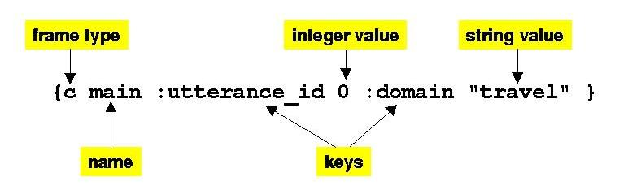
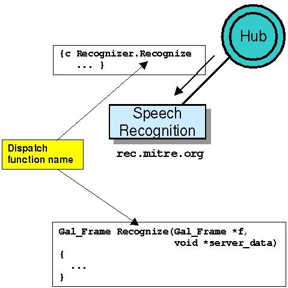
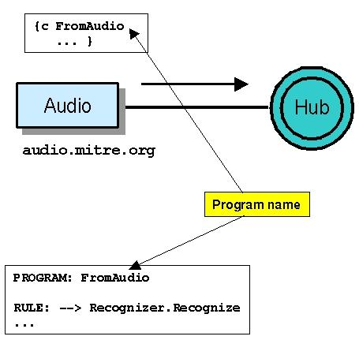
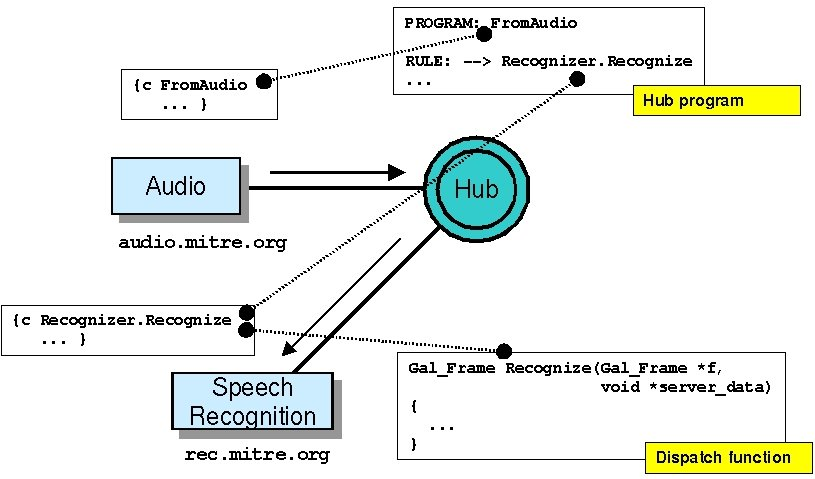
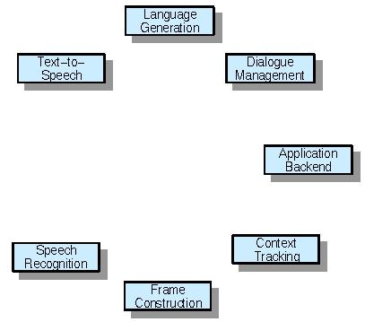
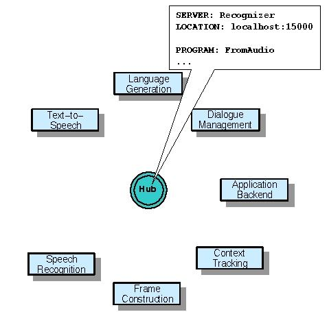
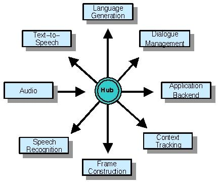
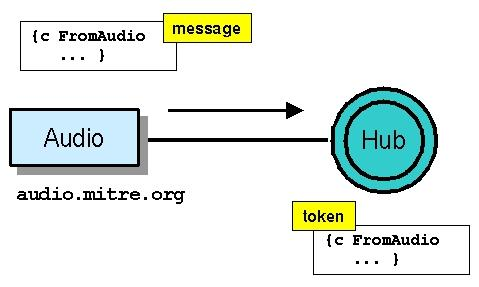

Galaxy Communicator Tutorial:
The Basics: How the Hub and Server Communicate, and What They Say
An instance of the Galaxy Communicator
infrastructure consists of potentially many processes, perhaps running
on separate computers. These processes are arranged in a hub-and-spoke
configuration. The spokes are known as servers, while the central
hub is named (obviously enough) the Hub (capitalized throughout
the documentation). Because none of these processes operates independently,
it sometimes seems like it's necessary to learn everything at once. In
this first lesson, we'll try to explain how these processes communicate,
and how a configuration of servers and Hub get started.
Frames
Almost all communication in the Galaxy Communicator
infrastructure is in the form of a data structure called a frame.
A frame is an attribute-value structure consisting of a name, a frame type
(always "c" for clause, for historical reasons), and a set of pairs of
keys and associated typed values. The keys, by convention, start with a
colon (":"), but nothing in the infrastructure enforces this convention;
the types for the values are drawn from a fairly standard defined set of
types (integer, float, string, frame, list, etc.). These frames can be
constructed using API calls, or parsed from a formatted representation,
illustrated here:

In its printed representation, a frame
is delimited by curly brackets "{}"; the type "c" appears immediately after
the opening bracket, followed by the whitespace-delimited name, and finally
the alternating keys and values are listed. We'll look at the details of
the frame API and its printed representation later; all that's important
right now is that you recognize the printed representations of frames when
you see them.
Messages
A message is just a frame which is
passed from the server to the Hub, or from the Hub to the server. These
messages can be new messages, which initiate an action, or a reply to a
new message. Either the Hub or server can send or receive new messages.
In this section, we'll talk about what happens when a process receives
a new message; later on,we'll talk about how a process might send a new
message.
When
a server receives a new message
From the point of view of the Hub, servers
provide bits of behavior which the Hub can invoke by sending a new message
to the server. These bits of behavior are called dispatch functions.
When a server receives a new message, it looks for a dispatch function
which it supports whose name matches the name of the incoming message frame:

The name of the incoming frame can be qualified
by an "address", which tells the Hub which server to send the message to,
or it can be unqualified. In the illustration here, the frame which the
speech recognition server received has the address Recognizer
and the dispatch function name Recognize.
The server finds the named dispatch function and invokes it.
Dispatch functions can do a wide variety
of things. They can send message replies, send new messages and optionally
await message replies, or set up callbacks for backchannel connections
called brokers. We'll cover all these topics later.
When
the Hub receives a new message
In addition to routing message traffic among
the various servers, the Hub can be provided with simple scripts called
Hub
programs. These Hub programs are sequences of rules which dictate
which dispatch functions are invoked on which servers, what order they're
invoked in, and under what conditions.
When the Hub receives a new message, it
searches for a Hub program whose name matches the name of the incoming
message. If it finds a program with that name, it invokes the program.
This is called a scripted interaction. If the Hub doesn't know of
a program with the given name, it searches for a server which provides
a dispatch function with the given name, and relays the message it received
directly to the server which provides the dispatch function. This is called
a scriptless interaction. If neither a program nor a server is found,
the new message is discarded.
This illustration provides an example of
a scripted interaction:

In this illustration, the audio server
sends a message named FromAudio
to the Hub, which knows of a program with that name. The program has a
rule which tells the Hub to send a message named Recognizer.Recognize.
A
simple message sequence
If you've guessed that the
message the Hub is sending in these examples is the same as the
message the server is receiving, you're right:
So firing a rule in a Hub program is one
way that the Hub can send a new message. Later on in this lesson, we'll
learn about the other ways that new messages can be sent.
Starting
up a Galaxy Communicator system
In order to run a configuration Galaxy Communicator
processes, you have to start up all the processes: all the servers, and
the Hub. The most convenient order for starting these processes depends
on the Hub. In some cases, the Hub will contact the servers, and in other
cases, the servers will contact the Hub. The details of this initialization
sequence can be controlled in a number of complex ways, but we'll describe
a simple case here.
Step 1: Servers
start up
Typically, the first thing that happens is
that the servers which the Hub will contact start up:

These servers will set up a port to listen
for connections from a Hub.
Step
2: Hub reads program file
Typically, the Hub starts up next. When the
Hub starts up, it reads a program file (specified on the command
line with the -pgm_file directive),
which contains:
-
a list of servers to communicate with (and
whether the Hub should contact the servers or the servers will contact
the Hub)
-
global information such as logging instructions
-
zero or more Hub programs

If the Hub is supposed to contact a server,
the program file will list the host and port the Hub should contact the
server at. In this case, the Recognizer
server is listening on port 15000 on the local host.
Step
3: Hub and servers contact each other
Now, the Hub contacts the servers it's supposed
to contact, and starts listening for connections from servers which are
supposed to contact it. When the Hub and server make a connection (no matter
which side initiates it), the Hub sends a connection-specific initialization
message named reinitialize,
which executes the reinitialize
dispatch function on the server (if it's defined).

In this illustration, the Hub is contacting
all the servers except for Audio,
which contacts the Hub at some later point.
Running
a Galaxy Communicator system
Once the Hub has contacted the servers it's
supposed to contact, the system begins its normal operation. During normal
operation, the Hub and servers wait for the arrival of new messages. So
where do these new messages come from?
When
the Hub receives a new message: tokens and rules
Before we talk about where new messages come
from, we need to go into a little more detail about what happens when the
Hub receives a new message.
Each new message specifies whether the
process that sent it wants an answer back or not. For each new message,
the Hub creates a token, which is initially just a copy of the incoming
message frame:

At this point, the Hub looks for an appropriately
named Hub program. If the Hub doesn't find such a program (a scriptless
interaction), the Hub relays the message to a server which provides a dispatch
function named by the incoming message, and if the original sender wants
an answer back, the Hub relays the reply from the dispatch function provider
back to the original sender. In this case, the only information in the
token that the Hub uses is whether the original sender wants an answer
back.
If the Hub does find an appropriate Hub
program (a scripted interaction), the token becomes the memory state of
the Hub program, which is updated, step by step, by the rules in the program.
The rules contain conditions under which the rules should be fired, instructions
for constructing a new message to be sent to a server, and instructions
for how to use the reply from the server to update the token. When the
program terminates, the current token is returned to the original sender,
if the original sender wants an answer back.
First
new message source: the initial token
So we've already seen the two ways way the
Hub generates a new message for a server: by firing a rule in a Hub program,
or by relaying a message to a server in a scriptless interaction. In most
cases, the new message which causes the Hub to do this comes from a server,
but there is one crucial case in which the message comes from the Hub itself:
the initial token.
The initial token is a frame, declared
in the Hub program file, which is processed immediately after the Hub contacts
the servers it's supposed to contact. This frame is treated as a new message
received by the Hub, and is processed accordingly. So one way to generate
a new message is to specify an initial token.
This is a fairly crude and unreliable way
to generate a new message, though. First, the initial token is only processed
once, and like all new messages, if it can't be processed, it's discarded.
So if you have servers which contact the Hub which are crucial to the execution
of the initial token, chances are they won't connect in time, and the wrong
things will happen. So while the initial token is valuable for one-time
system initializations (and for demonstration purposes), it's not a reliable
run-time source of new messages.
Second
new message source: reinitialize
We noted that when a server receives a new
message and executes a dispatch function, it can in turn send a new message
to the Hub. But this process can seem circular: the Hub sends a new message
to a server, which sends a new message to the Hub, which sends a new message
to a server, and on and on. We've seen one way this process can start:
via the initial token. Can this process start from dispatch functions?
The answer is yes. Remember that when the
Hub and server establish a connection, the Hub sends an initialization
message to the server named reinitialize,
which will then invoke the reinitialize
dispatch function. This means that this dispatch function is called without
the Hub needing to receive a message.
Since reinitialize
is called every time a connection is established, it's more reliable than
the initial token. First, it happens more often, and second, the timing
of the dispatch function is clearly defined relative to server connection
time. So for example, a batch processor could fire off its first batch
processing request from the reinitialize
dispatch function, and fire off each successive request upon receiving
the result of the current request, until the batch process is complete.
But this source of new messages is still limited; it's once per connection
establishment.
Third
new message source: user gestures
The third source of new messages is by far
the most common: user gestures. The Galaxy Communicator infrastructure
is designed for human-computer interaction, and most such interactions
ultimately originate with the user, via a mouse click, microphone input,
typed input, pen gesture, or some other UI action. The Galaxy Communicator
infrastructure is designed to interact gracefully with processes which
are connected both to a Hub and to the user in some way, and you can write
these processes to translate user gestures into Galaxy Communicator messages.
Summary
In this introductory lesson, you've learned
the basics about a wide range of elements of the Galaxy Communicator infrastructure:
-
servers
-
the Hub
-
frames
-
messages
-
dispatch functions, including reinitialize
-
brokers
-
Hub programs and program rules
-
scripted and scriptless interactions
-
program files
-
tokens, including the initial token
In the remainder of this tutorial, you'll
learn enough about each of these elements to allow you to build your own
Communicator-compliant system.
Next: Our
first tool: the process monitor
Last updated September 10, 2001